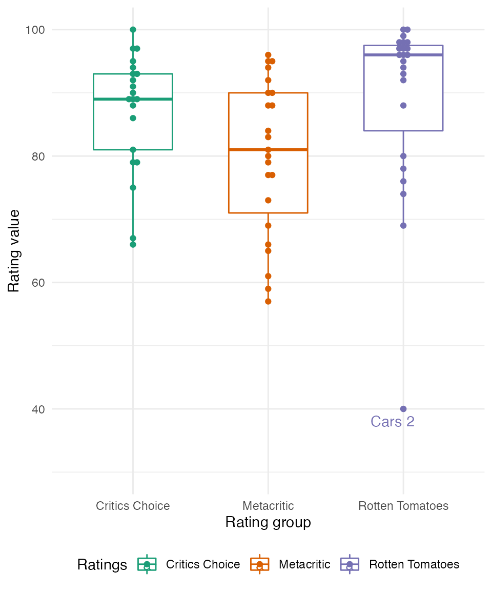

Overview
This vignette is to recreate an analysis on Pixar ratings that can be found here.
Setup
library(pixarfilms)
library(dplyr)
#>
#> Attaching package: 'dplyr'
#> The following objects are masked from 'package:stats':
#>
#> filter, lag
#> The following objects are masked from 'package:base':
#>
#> intersect, setdiff, setequal, union
library(tidyr)
library(forcats)
library(ggplot2)
library(irr)
#> Loading required package: lpSolveData wrangling
Before we can visualize our data, let’s wrangle our data to help us visualize it later on.
df <-
public_response %>%
select(-cinema_score) %>%
mutate(film = fct_inorder(film)) %>%
pivot_longer(cols = c("rotten_tomatoes", "metacritic", "critics_choice"),
names_to = "ratings",
values_to = "value") %>%
mutate(ratings = case_when(
ratings == "metacritic" ~ "Metacritic",
ratings == "rotten_tomatoes" ~ "Rotten Tomatoes",
ratings == "critics_choice" ~ "Critics Choice"
)) %>%
drop_na()Ratings over time
Their first plot was comparing the Pixar films’ ratings over time.
df %>%
ggplot(aes(x = film, y = value, col = ratings)) +
geom_point() +
geom_line(aes(group = ratings)) +
scale_color_brewer(palette = "Dark2") +
labs(x = "Pixar film", y = "Rating value") +
guides(col = guide_legend(title = "Ratings")) +
theme_minimal() +
theme(axis.text.x = element_text(angle = 90, vjust = 0.5),
legend.position = "bottom") 
Verdict: people and critics generally agree that Cars 2 was not as good as the other Pixar films.
Ratings by rating group
Next, let’s group the rating categories to see if there is a consistency across.
df %>%
ggplot(aes(x = ratings, y = value, col = ratings)) +
geom_boxplot(width = 1.75 / length(unique(df$ratings))) +
ggbeeswarm::geom_beeswarm() +
ggrepel::geom_text_repel(data = . %>%
filter(film == "Cars 2" ) %>%
filter(ratings == "Rotten Tomatoes"),
aes(label = film),
point.padding = 0.4) +
scale_color_brewer(palette = "Dark2") +
guides(col = guide_legend(title = "Ratings")) +
labs(x = "Rating group", y = "Rating value") +
ylim(c(30, 100)) +
theme_minimal() +
theme(legend.position = "bottom") 
Verdict: people at Rotten Tomatoes generally like Pixar films more than Metacritic and Critics Choice. The exception to this is Cars 2, which rated the lowest out of all critic groups.
Rating consistency
Are the groups statistically consistent? Let’s perform an interclass correlation among the different critic groups.
public_response %>%
select(-c(cinema_score, film)) %>%
drop_na() %>%
icc(model = "twoway", type = "consistency")
#> Single Score Intraclass Correlation
#>
#> Model: twoway
#> Type : consistency
#>
#> Subjects = 21
#> Raters = 3
#> ICC(C,1) = 0.797
#>
#> F-Test, H0: r0 = 0 ; H1: r0 > 0
#> F(20,40) = 12.8 , p = 1.25e-11
#>
#> 95%-Confidence Interval for ICC Population Values:
#> 0.633 < ICC < 0.904Verdict: with a null hypothesis that all critic groups are not consistent, for the 21 Pixar films we have data for all critic groups, all groups are consistent in rating Pixar films (p < 0.001).
Session information
sessionInfo()
#> R version 4.2.1 (2022-06-23)
#> Platform: x86_64-apple-darwin17.0 (64-bit)
#> Running under: macOS Big Sur ... 10.16
#>
#> Matrix products: default
#> BLAS: /Library/Frameworks/R.framework/Versions/4.2/Resources/lib/libRblas.0.dylib
#> LAPACK: /Library/Frameworks/R.framework/Versions/4.2/Resources/lib/libRlapack.dylib
#>
#> locale:
#> [1] en_US.UTF-8/en_US.UTF-8/en_US.UTF-8/C/en_US.UTF-8/en_US.UTF-8
#>
#> attached base packages:
#> [1] stats graphics grDevices utils datasets methods base
#>
#> other attached packages:
#> [1] irr_0.84.1 lpSolve_5.6.15 ggplot2_3.3.6 forcats_0.5.1
#> [5] tidyr_1.2.0 dplyr_1.0.9 pixarfilms_0.2.1
#>
#> loaded via a namespace (and not attached):
#> [1] beeswarm_0.4.0 tidyselect_1.1.2 xfun_0.31 bslib_0.3.1
#> [5] purrr_0.3.4 colorspace_2.0-3 vctrs_0.4.1 generics_0.1.3
#> [9] htmltools_0.5.2 yaml_2.3.5 utf8_1.2.2 rlang_1.0.3
#> [13] pkgdown_2.0.5 jquerylib_0.1.4 pillar_1.7.0 glue_1.6.2
#> [17] withr_2.5.0 RColorBrewer_1.1-3 lifecycle_1.0.1 stringr_1.4.0
#> [21] munsell_0.5.0 gtable_0.3.0 ragg_1.2.2 memoise_2.0.1
#> [25] evaluate_0.15 labeling_0.4.2 knitr_1.39 fastmap_1.1.0
#> [29] vipor_0.4.5 fansi_1.0.3 highr_0.9 Rcpp_1.0.8.3
#> [33] scales_1.2.0 cachem_1.0.6 desc_1.4.1 jsonlite_1.8.0
#> [37] farver_2.1.1 systemfonts_1.0.4 fs_1.5.2 textshaping_0.3.6
#> [41] digest_0.6.29 stringi_1.7.6 ggrepel_0.9.1 rprojroot_2.0.3
#> [45] grid_4.2.1 cli_3.3.0 tools_4.2.1 magrittr_2.0.3
#> [49] sass_0.4.1 tibble_3.1.7 crayon_1.5.1 pkgconfig_2.0.3
#> [53] ellipsis_0.3.2 ggbeeswarm_0.6.0 rmarkdown_2.14 R6_2.5.1
#> [57] compiler_4.2.1